Source: AVEVA Application Server 2023 Training Manual, Module 4, Section 3 + Lab 7 (pages 4-31 to 4-44)
How template changes propagate through the object hierarchy — the locking mechanism that protects derived objects and the change control workflow that keeps multi-developer environments organized.
Reference: Module 4, Section 3 (pages 4-31 to 4-33)
In a multi-developer environment, many engineers may work on the same Galaxy simultaneously. Change control is the system that manages who can modify what, and ensures that template changes propagate correctly through the object hierarchy without causing unintended side effects.
The change control system addresses a fundamental challenge: templates are shared. When you change a template, every object derived from it could be affected. Without change control, a single template edit could break dozens or hundreds of deployed objects.
Reference: Module 4, Section 3 (pages 4-31 to 4-32)
Application Server uses a hierarchical template structure where derived objects inherit attributes from their parent templates. The lock state of each attribute determines whether changes from the parent template will propagate down.
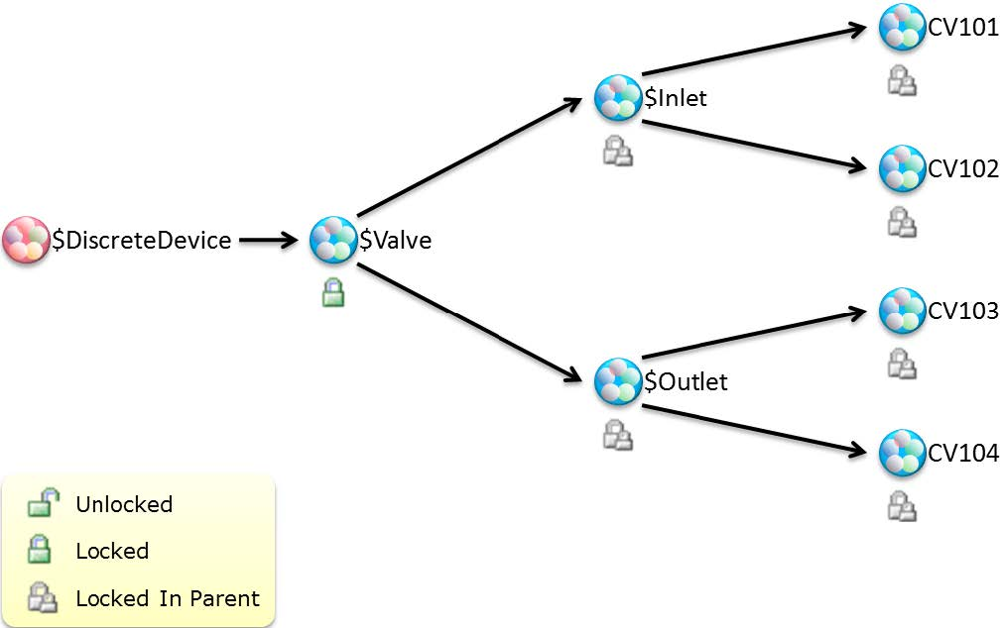
The hierarchy shown in the diagram illustrates a typical equipment model:
| Level | Object | Lock State | Meaning |
|---|---|---|---|
| Base Template | $DiscreteDevice |
Root | The base — changes here can propagate to all descendants |
| Area Template | $Valve |
Unlocked (green) | Receives changes from parent; can also propagate changes downward |
| Equipment Group | $Inlet, $Outlet |
Locked in Parent (grey with person icon) | Protected from parent changes — attributes locked so upstream edits don't overwrite local customizations |
| Object Instances | CV101, CV102, CV103, CV104 | Locked in Parent (grey with person icon) | Each instance is locked — protecting their specific I/O and configuration from template-level changes |
Reference: Module 4, Section 3 (pages 4-32 to 4-33)
Every attribute on every object exists in one of three lock states. Understanding these states is critical for managing change propagation:
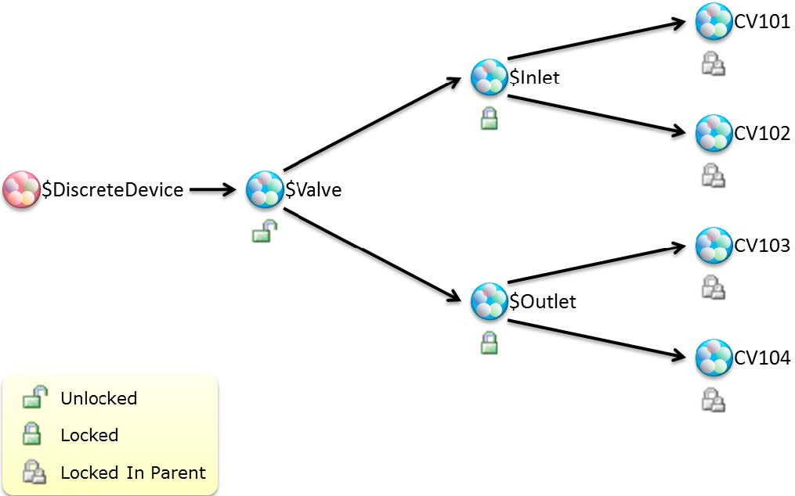
| Lock State | Icon | Behavior |
|---|---|---|
| Unlocked | Green open lock | The attribute is synchronized with the parent template. Any change to the parent's value will automatically propagate to this object. The object's value matches the template value. |
| Locked | Grey/person icon | The attribute is protected from parent changes. The attribute has been locally modified (or explicitly locked) so that parent template updates will NOT overwrite it. The value is "frozen" at the object level. |
| Locked in Parent | Grey/person icon | The attribute was locked by the parent template, so this object inherits the locked state. The attribute cannot be changed from this level — it can only be modified by unlocking at the template level where the lock was applied. |
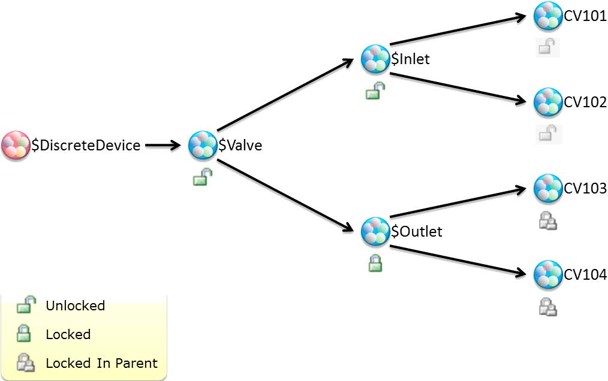
Reference: Module 4, Section 3 (pages 4-33 to 4-34)
Propagation follows predictable rules that determine whether a template change reaches its derived objects:
| Template Attribute State | Derived Attribute State | What Happens |
|---|---|---|
| Modified in template | Unlocked in derived | ✅ Change propagates — derived attribute updates to match template |
| Modified in template | Locked in derived | ❌ Change blocked — derived attribute retains its local value |
| Modified in template | Locked in Parent (derived) | ❌ Change blocked — lock was inherited from a higher-level template |
| Unchanged in template | Any state in derived | No change — nothing to propagate |
The IDE provides clear visual cues about lock states:
Reference: Module 4, Section 3 (pages 4-34 to 4-36)
In a multi-developer environment, the Galaxy Repository manages concurrent access through a check-out/check-in system. This prevents two developers from editing the same object simultaneously.
| Step | Action | Result |
|---|---|---|
| 1 | Check Out an object | You gain exclusive editing rights. The object is locked for other developers. You can modify attributes, scripts, and configuration. |
| 2 | Make changes in the Object Editor | Your modifications are stored locally in the IDE. They are not yet visible to other developers or to runtime. |
| 3 | Check In the object | Changes are saved to the Galaxy Repository. The object is unlocked for other developers. The IDE shows the updated object. |
| 4 | Deploy (if needed) | Checked-in changes are pushed to runtime. Check-in and deployment are separate steps — you can check in without deploying. |
Reference: Module 4, Lab 7 (pages 4-37 to 4-44)
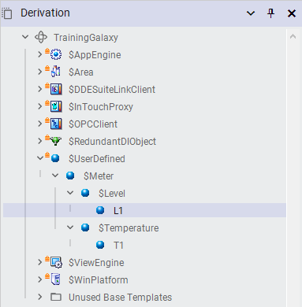
Reference: Module 4, Lab 7 (pages 4-38 to 4-39)
The first step is to lock specific attributes in the $Valve template so that downstream objects are protected from changes to those attributes. This simulates a real-world scenario where certain valve properties are customized per-instance and should not be overwritten by template updates.
Step 1a: Open the $Valve template in the Object Editor. Navigate to the attributes you want to protect.
Step 1b: Select the attributes that should be unique to each valve instance — typically the I/O reference, tag name, and device-specific scaling values.
Step 1c: Right-click the selected attributes and choose Lock. The lock icons change to indicate the locked state.
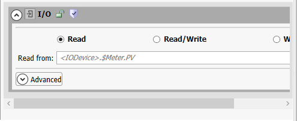
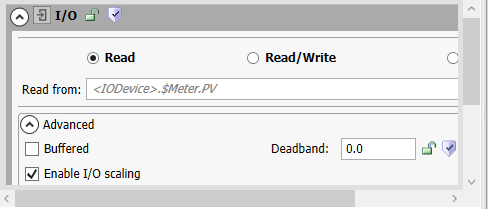
Step 1d: Verify the lock states. Locked attributes should display the grey lock/person icon. Unlocked attributes retain the green open lock icon.
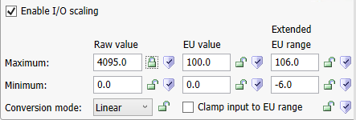
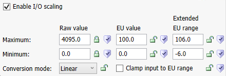
Reference: Module 4, Lab 7 (page 4-39)
Before testing propagation, configure I/O scaling on the derived valve objects. I/O scaling converts raw PLC values into meaningful engineering units — for example, converting a 0–100% signal into a 0–100% open position or a flow rate in GPM.
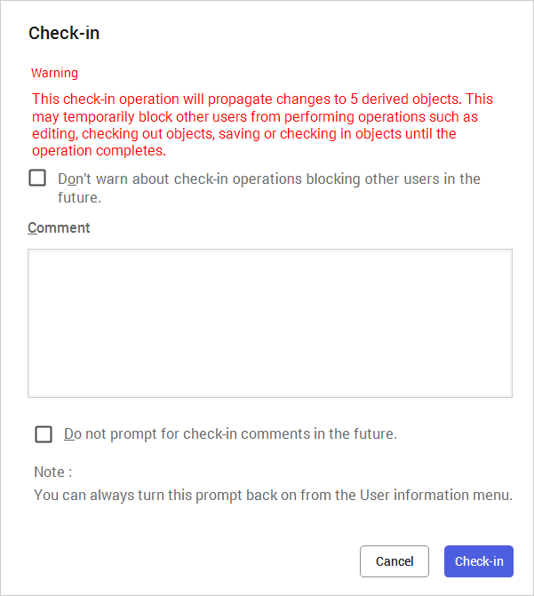
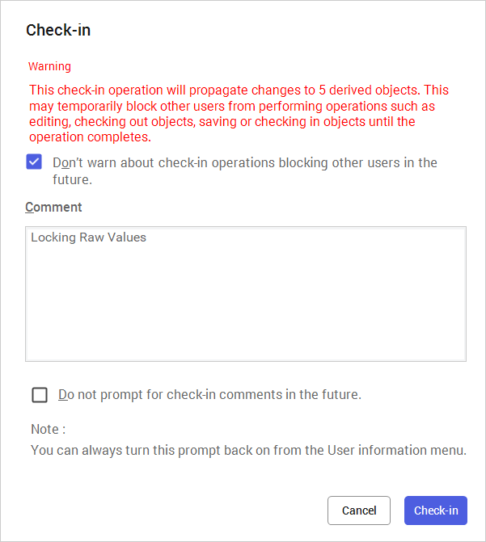
Key I/O scaling parameters typically include:
| Parameter | Description |
|---|---|
| Raw High / Raw Low | The input range from the PLC (e.g., 0–4095 for a 12-bit ADC, or 0–100 for a percentage signal) |
| EU High / EU Low | The output engineering units range (e.g., 0–100% open, 0–500 GPM flow rate) |
| Clamping | Whether values outside the raw range are clamped to the EU limits or allowed to exceed them |
Reference: Module 4, Lab 7 (pages 4-40 to 4-41)
Now the critical test: modify an attribute in the $Valve template and observe which derived objects receive the change and which are protected by the locks.
Step 3a: Open the $Valve template and modify an unlocked attribute — for example, change an alarm limit or description text.
Step 3b: Check in the template change.
Step 3c: Open one of the derived valve objects (e.g., CV101). Verify that:
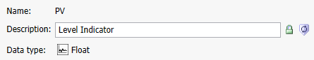
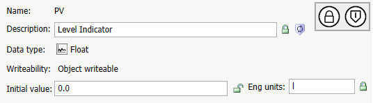
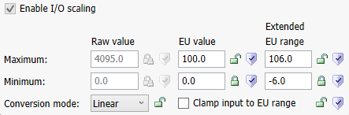
Reference: Module 4, Lab 7 (pages 4-41 to 4-42)
Practice the multi-developer check-out/check-in workflow:
Step 4a: Check out an object (right-click → Check Out). Notice the visual indicator showing the object is checked out to you.
Step 4b: Attempt to check out the same object from a different IDE session (if available). The system should prevent this — the object is locked.
Step 4c: Make your modifications to the checked-out object.
Step 4d: Check in the object. The lock is released and other developers can now check it out.
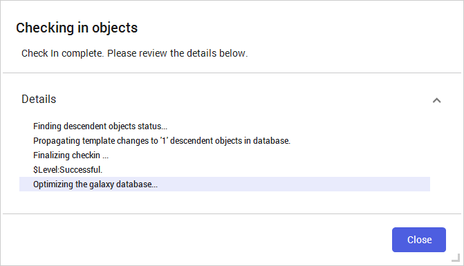
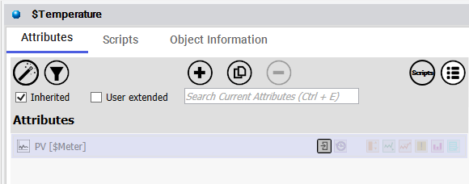
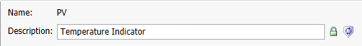
Reference: Module 4, Lab 7 (pages 4-42 to 4-44)
Complete the lab by deploying the modified objects and verifying everything works correctly at runtime.
Step 5a: Deploy the objects that were modified. Verify deployment completes successfully.
Step 5b: Open Object Viewer and inspect the deployed valve objects. Confirm that:
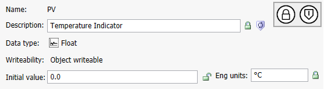
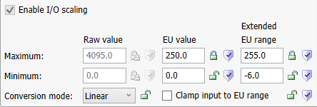
Q1: What does it mean when an attribute is "Locked" in Application Server?
A locked attribute is protected from parent template changes. Modifications made to the attribute in the parent template will NOT propagate to the derived object — the attribute retains its local value.
Q2: What is the difference between "Locked" and "Locked in Parent"?
"Locked" means the attribute was explicitly locked on this object. "Locked in Parent" means the lock was inherited from a higher-level template — the attribute was locked at a parent template level, and this object inherits that locked state.
Q3: You modify an alarm limit on a base template. A derived object has that alarm limit attribute locked. What happens to the derived object's alarm limit?
Nothing — the derived object's alarm limit retains its current value. The lock prevents the template change from propagating. The derived object keeps its locally-set alarm limit.
Q4: In the check-out/check-in workflow, what happens if you check out an object but never check it back in?
The object remains locked and no other developer can check it out or edit it. An administrator may need to force-check the object back in to release the lock.
Q5: Why would you lock the I/O reference attribute on a derived valve object but leave the alarm limit attribute unlocked?
The I/O reference is unique to each physical valve — it connects the object to a specific PLC tag. If unlocked, a template change would overwrite it, breaking communication. The alarm limit is a shared setting that should propagate from the template so all valves use the same alarm thresholds.
Q6: What does I/O scaling do, and why is it configured on derived objects rather than templates?
I/O scaling converts raw PLC values (e.g., 0–4095 ADC counts) into meaningful engineering units (e.g., 0–100% or 0–500 GPM). It is often configured on derived objects because different instruments may have different ranges, scales, or calibration — even if they use the same template.
Click each answer to reveal it.
Next: Lesson 14 — Containment and Mixer configuration.